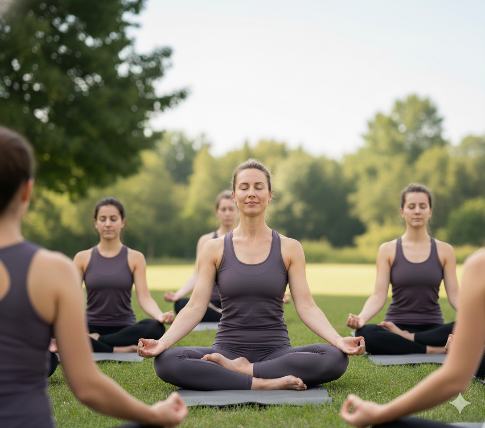
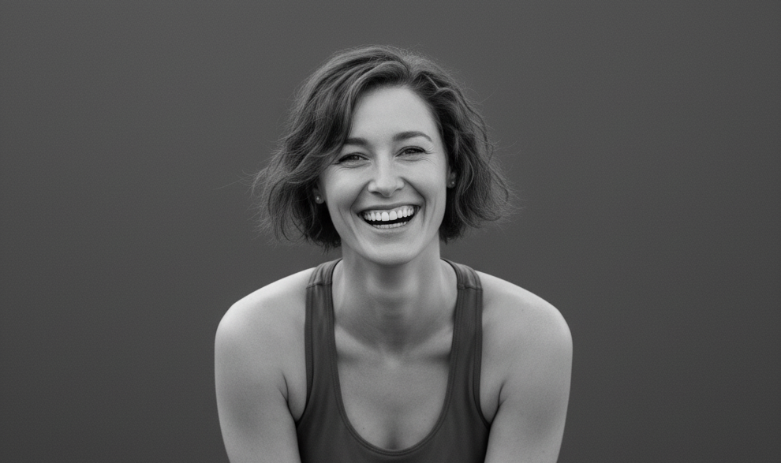

Intro

Ich bin Jane Doe – Yogalehrerin und Aromatherapeutin.
In meiner Arbeit verbinde ich Bewegung, Atmung und Düfte, um Körper und Geist sanft in Einklang zu bringen. Nimm dir einen Moment Zeit, tief zu atmen – und entdecke, wie kleine Rituale große Wirkung entfalten können.
Angebot

Yoga & Aromatherapie
Mein Angebot richtet sich an alle, die achtsam leben und ihre innere Balance stärken möchten.
- Yoga: Sanfte Flows, Meditation und bewusste Atmung – individuell angepasst an deine Bedürfnisse.
- Aromatherapie: Ätherische Öle unterstützen das emotionale Gleichgewicht und fördern Entspannung, Energie und Klarheit.
Ich biete Einzelstunden, kleine Gruppen sowie Workshops zu verschiedenen Themen an – online oder vor Ort in Wien.
Unverbindlich anfragen
Über mich

Schon früh habe ich gespürt, wie stark die Verbindung zwischen Körper, Geist und Natur ist. Nach meiner Ausbildung zur Yogalehrerin (RYS 200) und meiner Weiterbildung in Aromatherapie durfte ich viele Menschen auf ihrem Weg zu mehr Ruhe und Selbstwahrnehmung begleiten.
Ich glaube daran, dass Heilung im Kleinen beginnt – in Achtsamkeit, Bewegung und Düften, die uns erden und inspirieren.
Kontakt

Möchtest du mehr erfahren oder eine Stunde buchen?
Impressum
Medieninhaberin & Verantwortliche: Jane Doe
Adresse:
Kontakt: test@email.de | +43 XX XXX XX XX
Berufsbezeichnung: Yogalehrerin & Aromatherapeutin
Hinweis: Diese Website dient als Informationsangebot. Alle Inhalte ohne Gewähr.
Datenschutzerklärung
Diese Website setzt keine Tracking-Cookies und verwendet keine externen Schriftbibliotheken (Google Fonts) oder eingebettete Dienste, die personenbezogene Daten ohne Einwilligung übertragen.
Verantwortliche
Jane Doe, Wien, Österreich, E-Mail: test@email.de
Server-Logs
Beim Aufruf der Seiten werden durch den Hoster (GitHub Pages) automatisch Server-Logfiles erhoben (u.a. IP-Adresse, Datum/Uhrzeit, angefragte Datei). Diese Logfiles werden zur Sicherstellung des technischen Betriebs gespeichert.
Kontaktaufnahme
Bei Kontakt per E-Mail verarbeite ich die angegebenen Daten zur Beantwortung der Anfrage. Rechtsgrundlage: Art. 6 Abs. 1 lit. b DSGVO.